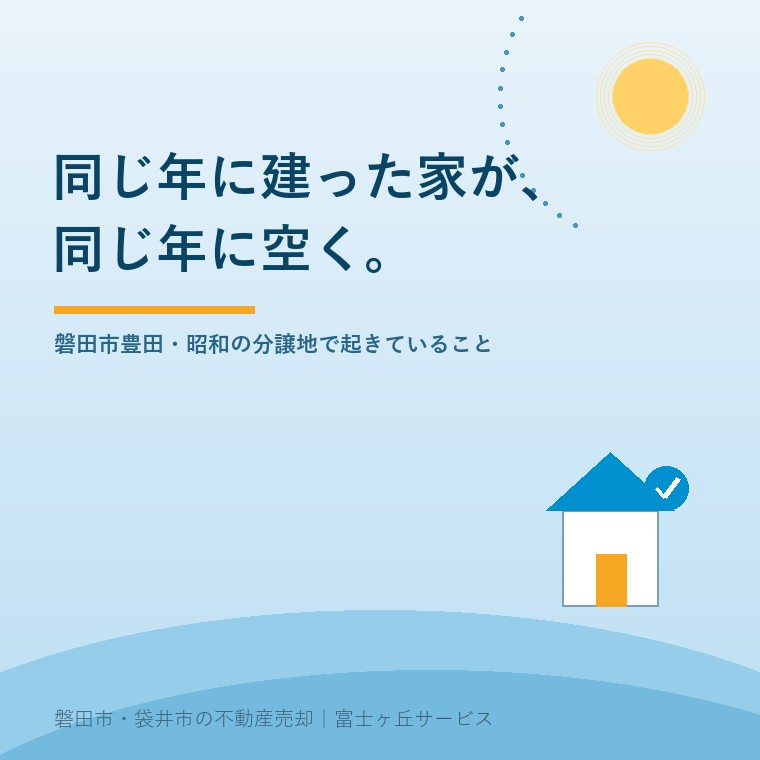

2026年8月19日｜カテゴリ：地域と不動産／売却の進め方

この記事の要点
Q. 実家のある分譲地で、この一年に三軒も売り家が出ました。うちも母を施設に入れたところで、そのうち売ることになります。今出したら、値崩れしませんか。
A. 同じ街区に売り物が並ぶと、買主は比べます。ただし「早く出したほうが不利」とは限りません。比べられるのは価格だけではなく、建物の状態、境界の明確さ、書類の揃い方だからです。同じ年に造成された分譲地では、入居した世代がそろって年齢を重ねるため、空き家が一軒ずつではなく面で出ます。これは磐田市に限った話ではなく、令和5年住宅・土地統計調査でも全国の空き家は900万2千戸、空き家率13.8％と過去最高で、高齢者のいる世帯の81.6％が持ち家でした。判断の材料は①ご家族の資金と時期の都合 ②建物の傷み方 ③私道や給水管など共同設備の状態の3つです。とくに③は、街区がまとめて古くなるため、後になるほど話がまとまりにくくなります。磐田市・袋井市・森町では、介護施設の運営から不動産事業を始めた富士ヶ丘サービスのような「介護×不動産」専門の会社に相談するという選択肢があります。
旧豊田町の一帯を車で走ると、区画がきれいに揃った住宅地がいくつもあります。道の幅が同じ、敷地の間口が同じ、玄関の向きまでどこか似ている。ひとつの造成でまとめて生まれた分譲地です。
私が見てきた範囲では、こうした住宅地には共通する時間の流れがあります。造成が終わって売り出され、数年のうちにほとんどの区画が埋まる。買ったのは、当時三十代から四十代の子育て世帯です。子どもたちは同じ小学校に通い、親同士は自治会や子ども会で顔なじみになりました。
そして、その世代がそろって年齢を重ねます。同じ年に入居した人たちは、同じ年に八十代になります。
今日は、この「一斉に始まった街区が、一斉に終わりに近づく」という現象を、統計と磐田市の計画に照らして整理します。数値は2026年8月19日時点で公表されているものです。
総務省統計局が令和6年9月25日に公表した令和5年住宅・土地統計調査「住宅及び世帯に関する基本集計（確報集計）」から、この話に効く数字を並べます。
| 項目 | 2023年10月1日現在 |
|---|---|
| 総住宅数 | 6504万7千戸（2018年から4.2％増、過去最多） |
| 空き家数 | 900万2千戸（2018年の848万9千戸から51万3千戸増、過去最多） |
| 空き家率 | 13.8％（2018年13.6％から0.2ポイント上昇、過去最高） |
| 賃貸・売却用及び二次的住宅を除く空き家 | 385万6千戸（総住宅数の5.9％） |
この「賃貸・売却用及び二次的住宅を除く空き家」というのが、いわゆる持ち主が住まなくなったまま置かれている家です。5年で36万9千戸増えました。
次に、なぜそれが増えるのか。同じ調査の高齢者に関する集計が、そのまま答えになっています。
| 項目 | 2023年 |
|---|---|
| 65歳以上の世帯員がいる主世帯 | 2375万世帯（主世帯全体の42.7％、2018年から0.7ポイント上昇） |
| 75歳以上の世帯員がいる主世帯 | 1380万8千世帯（同24.8％） |
| 高齢単身世帯 | 761万7千世帯。高齢者のいる世帯の32.1％で過去最高 |
| 高齢者のいる夫婦のみの世帯 | 686万9千世帯（同28.9％） |
| 高齢者のいる世帯の持ち家率 | 81.6％（主世帯全体の持ち家率60.9％より20.7ポイント高い） |
高齢者のいる世帯の8割超が持ち家に住んでいる。これが、空き家が生まれる構造そのものです。持ち家に住む高齢の世帯が施設に移るか亡くなると、その家は誰も住まない家になります。そして分譲地では、その世帯が同じ場所に固まっています。
もうひとつ。現住居以外の住宅を所有している主世帯は475万3千世帯（8.5％）で、そのうち空き家を所有している世帯は141万6千世帯（2.5％）。世帯が所有する空き家のうち47.5％が「賃貸・売却用及び二次的住宅を除く空き家」でした。実家を相続したまま、貸してもいない、売りにも出していない。その状態がいちばん多い、ということです。
市の計画にも数字があります。磐田市空家等対策計画は、計画期間を2022年度（令和4年度）から2026年度（令和8年度）までの5年間としています。
| 指標 | 現状 | 目標（令和8年度） |
|---|---|---|
| 市内の空き家 | 1,880戸（令和2年） | 2,000戸未満に抑える |
| 管理不全空き家の改善割合 | 39％ | 50％以上 |
「減らす」ではなく「2,000戸未満に抑える」という目標の立て方に、実情がよく表れていると思います。増えるほうに向かう力が働いているなかで、どこで踏みとどまるかという設計です。
市は、空き家相談会の開催、空き家バンクの設置、既存住宅取得等事業費補助金、危険空き家等除却事業費補助金といった支援策を用意しています。補助金の内容と要件は年度によって変わります。最新の取扱いは磐田市の建築住宅課（電話0538-37-4851）へご確認ください。
ここからが本題です。同じ街区に売り物が同時に3件、4件と並ぶと、何が起きるか。
買主は比べます。これは避けられません。ただし、比べる項目は価格だけではありません。私の経験では、次の順で見られます。
| 買主が比べるもの | 売主が事前にできること |
|---|---|
| 建物の傷み方 | 雨漏り・シロアリ・傾きの有無を把握しておく。分からないままにしない |
| 境界がはっきりしているか | 境界標の有無を確認する。無ければ調査士に相談する |
| 書類が揃っているか | 建築確認・検査済証・分譲時の図面・設備の記録を探す |
| 残置物が片づいているか | 家財の量を把握し、処分の見積もりを取っておく |
| 価格 | 上の4つが整っていれば、価格を下げずに済む余地が広がる |
同じ街区の同じ時期の家は、間取りも面積も似ています。だからこそ、上の4項目の差がそのまま選ばれる理由になります。「同じような家が3軒あるなかで、いちばん状態と書類がはっきりしている家」が先に決まる。これが実際に起きていることです。
価格で競うと、街区全体の相場が下がります。そして下がった価格は、次に売る家の参考価格になります。近隣の成約事例は、そのまま次の査定の材料になるからです。だから私は、同じ街区に売り物が並んでいるときほど、価格以外を整えることをお勧めしています。
「みんなが売り出しているうちは待ったほうがいいのでは」というご質問を、よくいただきます。
結論から言えば、待つことに意味があるのは「待つ間に何かが良くなる場合」だけです。分譲地の場合、待つ間に良くなるものは、あまりありません。
| 待つ間に起きること | 向き |
|---|---|
| 建物がさらに古くなる | 不利 |
| 庭木が伸び、雨樋が詰まり、家財がそのまま残る | 不利 |
| 相続人がさらに増える（次の代の相続が起きる） | 不利 |
| 私道や共同設備の共有者が、さらに高齢になる／連絡がつかなくなる | 不利 |
| 固定資産税・水道の基本料金・火災保険料などの維持費が積み上がる | 不利 |
| 近隣の売り物が売れて、比較対象が減る | 有利 |
有利に働くのは最後の1行だけで、それも「先に売れた家の価格」が新しい基準になるという副作用を伴います。
だからといって「今すぐ売りましょう」と申し上げるつもりはありません。ご家族には、ご家族の事情があります。相続の話し合いが終わっていない、施設の費用の見通しが立っていない、まだ気持ちの整理がつかない。それは十分な理由です。
私がお伝えしたいのは、「待つ」と決めるなら、待っている間にできる準備をしておいてくださいということだけです。境界の確認、書類探し、家財の整理。これらは売らなくても価値が減らない作業です。
昭和の分譲地でいちばん見落とされるのが、複数の家で共同して使っている設備です。
当時の造成では、区画の奥まで行くための道路が私道のまま残されていることがあります。所有が分譲業者のままだったり、購入者全員の共有だったり、あるいは一区画の所有者の単独名義だったりします。私道の通行・掘削承諾書で書いたとおり、売却の際にはここで承諾が必要になります。
水道も同じです。磐田市の説明によれば、給水管と直結する給水用具（止水栓、蛇口など）をまとめて「給水装置」と呼び、水道メーターを除いたすべてが給水装置です。そして磐田市は、こう明記しています。
給水装置は、お客様（所有者）費用で設置される財産で、お客様に管理していただくものです。
つまり、敷地内および私道内の給水管は、市のものではなく所有者のものです。民地側で水漏れが起きたときの修理費は所有者の負担になります。ただし磐田市は、水漏れ箇所が道路と民地の境付近の場合でも連絡してほしい、現地を確認して負担の区分を判断するとしています。判断に迷ったら、まず上下水道総務課の給排水サービスグループ（電話0538-58-3086）へ相談するのが正解です。
私道の舗装も、共同で使っている管も、同じ年に造られたものは同じ頃に寿命が来ます。そして修繕には、共有者の同意と費用負担の合意が要ります。
ここで、街区の高齢化が効いてきます。
合意しなければならない相手が、年々つかまりにくくなっていく。これが「面で空く」ことの、いちばん実害のある側面です。
だから、共同設備の状態と共有者の顔ぶれは、早いうちに確認しておく価値があります。売る売らないに関わらずです。ご近所の名簿、自治会の記録、過去の修繕のときの回覧。そうしたものが手がかりになります。
もうひとつ、分譲地に固有の話があります。自治会です。
一斉に入居した街区では、自治会も同時に立ち上がっています。草刈り当番、ゴミ集積所の管理、防犯灯の電気代。これらを回してきた仕組みは、加入世帯が減ると成り立たなくなります。
空き家になったときに自治会をどうするかは、空き家になった実家の自治会は、抜けられるのかで詳しく書きました。ここでは一点だけ。買主にとって、その街区の自治会がまだ機能しているかどうかは、買う理由にも買わない理由にもなります。
「ゴミ集積所は誰が管理しているのか」「防犯灯は誰が払っているのか」。この2つに答えられる売主は、それだけで信頼されます。逆に「分かりません」が続くと、買主は街区全体の先行きを不安に感じます。
なお、旧豊田町域の住所表記や地名の成り立ちについては、合併で変わった住所の話も参考にしてください。古い分譲時のパンフレットに書かれた住所と、現在の住所が違うことがあります。
当社は、磐田市見付で介護施設を運営するところから不動産の仕事を始めました。ご相談の入口は、たいてい「親が施設に入った」「親を看取った」です。
昭和の分譲地では、この入口がご近所で同時に開きます。「隣の奥さんも施設に入ったらしい」「向かいのお宅も空いている」。そういう話を、ご相談のなかで何度も伺ってきました。
そのとき私たちがすることは、あわてて売り出すことではありません。まず、そのお宅の事実を揃えます。名義と相続の状況、境界、私道と給水管の共有関係、建物の傷み、家財の量。そのうえで、ご家族の資金と気持ちの都合に合わせて時期を決めます。
私たちが目指しているのは「高く売る」だけではなく、「家族が困らない売却」です。街区がまとめて空いていく場所では、「困らない」の中身に、ご近所との関係の引き継ぎが含まれます。介護の見通し、相続の順番、そして土地と設備の条件。この3つを一度に見られることが、介護から始まった不動産会社の強みだと思っています。
価格の前に事実を整理する道具として、ふじがおか実家カルテを用意しています。
同じ年に建った家が、同じ年に空く。それは、その街区がかつて同じ夢を共有していたということでもあります。ご近所そろって家を持ち、子どもを育て、庭木を植えた。その時間の記録が、いま一斉に節目を迎えているだけです。
まずは、固定資産税の通知書と、分譲時のパンフレットや図面が残っていればそれをご用意ください。それだけで、確認の順番を一枚にしてお渡しできます。
ふじがおか実家カルテ｜昭和の分譲地の実家にも対応します
同じ街区に売り物が並ぶ前に、事実を揃える。
住所をもとに、名義と相続登記、境界標の状況、私道の所有と承諾の要否、給水管の共有関係、家財の量、農地の有無を整理し、次に何を確認すべきかを1枚にしてお出しします。作成料0円・入力約1分。申込みだけで売却依頼にはなりません。
本記事は2026年8月19日時点で総務省統計局および磐田市が公表している情報に基づく一般的な解説であり、個別の物件の価格や売却時期の判断を示すものではありません。統計の数値は全国のものであり、特定の地区の状況を示すものではありません。磐田市の空き家の戸数は同市空家等対策計画に記載された値で、調査時点が異なる数値と単純に比較することはできません。空き家に関する補助金の内容・要件・受付期間は年度によって変わりますので、最新の取扱いは磐田市の建築住宅課（電話0538-37-4851）へご確認ください。給水装置の負担区分および漏水時の取扱いは磐田市の上下水道総務課 給排水サービスグループ（電話0538-58-3086）へ、私道の所有関係と承諾の要否は当社または司法書士へ、境界の確定は土地家屋調査士へ、相続登記は司法書士へ、譲渡に伴う税務は税理士へご確認ください。個別のご相談は当社までどうぞ。

この記事を書いた人：大石浩之（宅地建物取引士）
磐田市・袋井市・森町で「介護×相続×空き家」に特化した不動産売却支援を行う富士ヶ丘サービスの代表取締役・宅地建物取引士。介護施設の運営から不動産事業を始めた経験をもとに、売主とご家族が困らない売却を一件ずつお手伝いしています。プロフィール
磐田市・袋井市・森町の実家じまい・相続空き家相談
固定資産税通知書だけでも相談できます
住所があいまいでも、通知書や写真から名義・道路・農地・残置物の確認順を整理します。カルテ申込またはLINEで状況を送ってください。
富士ヶ丘サービス株式会社／静岡県磐田市見付5789番地1／TEL:0538-31-3308／静岡県知事 (2) 第14083号／代表取締役・宅地建物取引士 大石 浩之